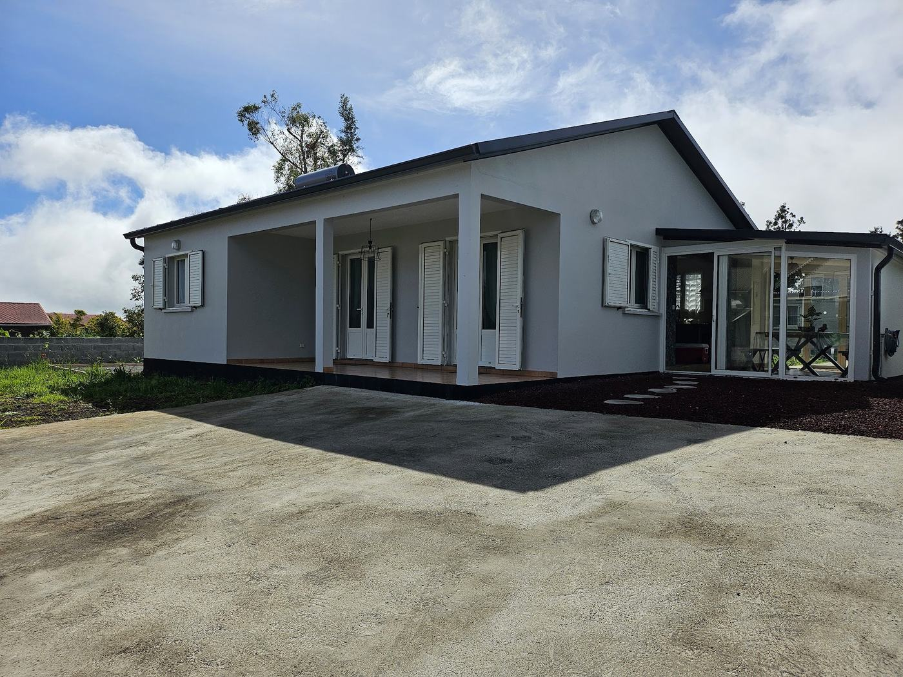

Villa · La Plaine-des-Palmistes
Nichée au cœur du village, cette villa offre un cadre apaisant, idéal pour ralentir, savourer et se reconnecter à la nature environnante.

L’essentiel
Boulangerie et supérette à quelques minutes à pied : la voiture se repose, le village se découvre en flânant.
Jusqu’à 6 voyageurs, avec un chauffage dans chaque chambre pour profiter pleinement du climat montagnard.
Une cuisine extérieure au feu de bois et un barbecue, en plus de la cuisine intérieure équipée.
Un espace détente et jeux avec baby-foot et un terrain de pétanque privatisé, pour des parties en famille ou entre amis.
La villa en images
Équipements
6 voyageurs · 3 chambres · 90 m², dans un village de montagne.
Linge de maison et serviettes de toilette inclus : vous arrivez, tout est prêt.
Ils en parlent
Les voyageurs reviennent souvent sur la dépendance et son baby-foot, la pétanque, le panier d’accueil et l’emplacement au cœur du village.
« Logement propre, confortable et bien équipé. Le petit plus ; la dépendance où nous avons passé beaucoup de notre temps et le terrain de pétanque (vous avez tous ce qu’il faut sur place pour y jouer.) … Les enfants ne voulaient plus rentrer alors on valide ++. »
« … A notre arrivée, un bel accueil avec un panier de fruits , la maison très jolie sentait bon le propre et cette dépendance où nous avons bien rigolé et joué au baby foot , était extra . Un lieu très bien situé pour éviter de prendre la voiture et visiter le village . Une adresse que nous recommandons sans hésiter … »
« Pour la troisième fois, nous avons passé un superbe moment à la Villa Ti Coin Frais. Celle-ci est toujours à la hauteur de nos attentes … Nous avons eu beaucoup de plaisir à y séjourner et avons déjà hâte d’y revenir ! »
« Très belle maison avec beaucoup d’espace et un très bon emplacement (boulangerie et supermarché à proximité). … on a eu un très bon accueil avec un panier offert et la maison est vraiment superbe avec beaucoup d’activités pour les enfants (jeux de société,pétanques ,babyfoot). On s’est vraiment bien amusés je veux déjà revenir ,si vous hésiter foncez ! »
« … on a passé un excellent moment à la villa ti coin frais … vraiment je vous le conseille même si il pleut on passe tjrs un bon moment … »
Extraits d’avis publiés sur la fiche Google de la villa. Lire tous les avis · Voir la fiche de l’Office de tourisme
Le quartier
L’accueil
À l’arrivée, un panier de fruits ou un panier garni vous attend : un geste que plusieurs voyageurs saluent dans leurs avis.
L’équipe de la villa répond personnellement à ses voyageurs, et certaines familles reviennent déjà pour la troisième fois.
Langues parlées : français, créole et anglais.
Infos pratiques
Horaires à convenir avec l’équipe de la villa
Jusqu’à 6 voyageurs, idéal en famille ou entre amis
Linge de maison et serviettes de toilette inclus
Un cadre paisible au cœur du village ; vos compagnons à quatre pattes restent à la maison
Du vendredi au dimanche, parfaite pour se retrouver
Virement bancaire, chèque ou espèces
Sur demande, selon vos dates
Collectée par l’hôte pour les réservations en direct
Contrat de location et état descriptif remis avec la confirmation
Réserver en direct
L’équipe de la villa vous répond personnellement avec le tarif de votre séjour.